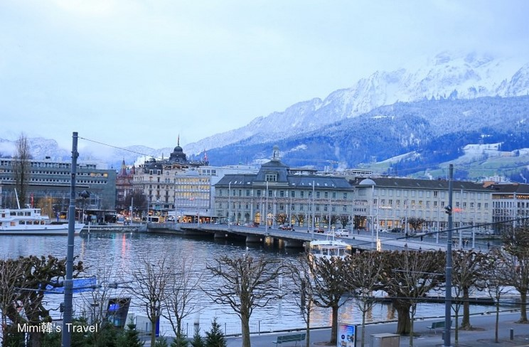
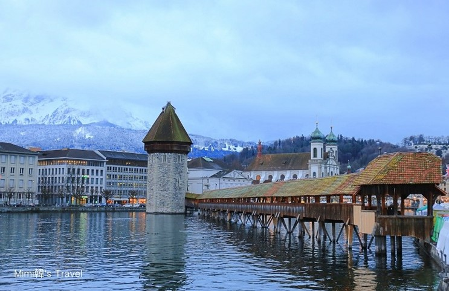
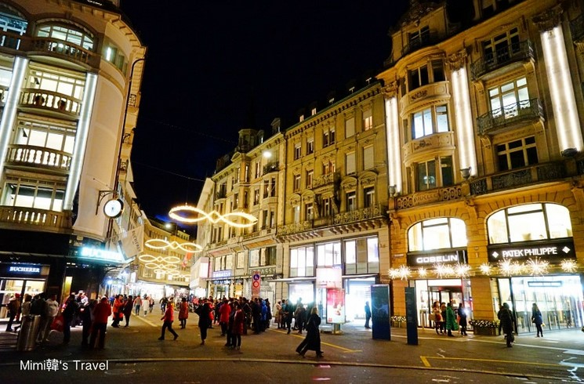

2025年4大人生必去夢想旅遊目的地
瑞士 琉森
琉森湖是瑞士第五大湖泊，四周被皮拉圖斯峰、石丹峰、瑞吉峰等阿爾卑斯山的群山環抱，優美的景色也讓這座城市變成瑞士的代表性畫面之一，可以沿著湖邊的步道散步，也有觀光船可以搭，光是在橋邊＆飯店拍照就很滿足了。

卡貝爾橋原建於1333年，是歐洲現存最古老的木橋，是琉森的地標，也是瑞士的一大旅遊景點，最早是為了防禦工事而建，橋中八角形高塔當時作為瞭望台、監獄等設施使用。不過可惜在1993年一次撞船意外中部分橋段被焚毀，後來依靠工匠的巧手才把它原汁原味的復原起來。

跨過盧森車站前面的陸橋，過來就是熱鬧的天鵝廣場，以這裡為起點，眼前一幢幢充滿歷史感的建築，附近是琉森市區裡逛街的地方，從ROLEX、蕭邦錶、服飾精品店、巧克力商店等都能找到，而且很多來瑞士旅行團都會在這裡停留，也因此部分店家會有中文。
